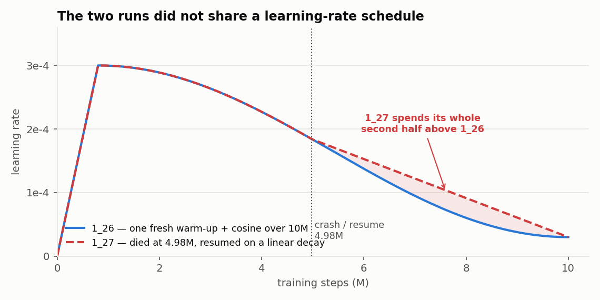
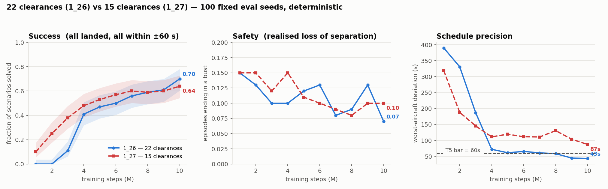
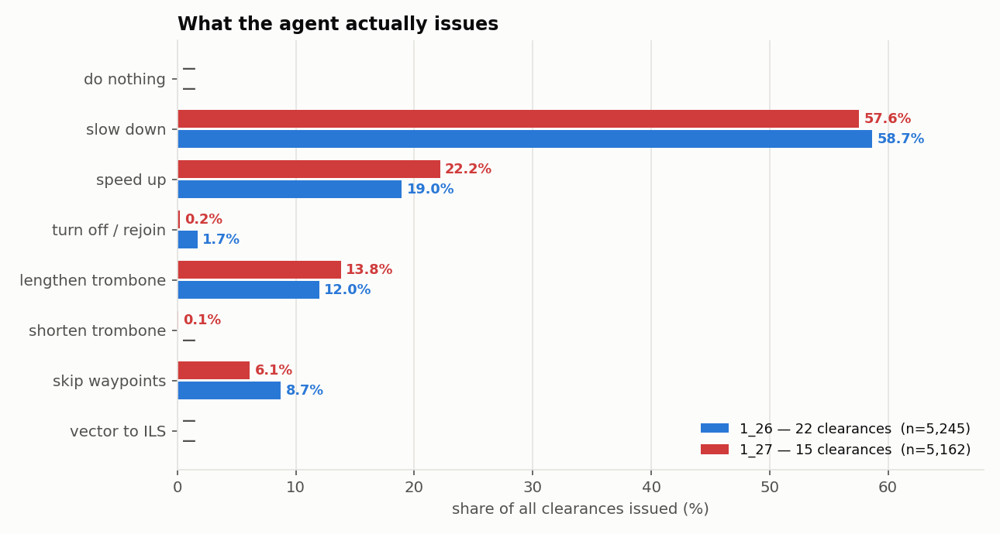
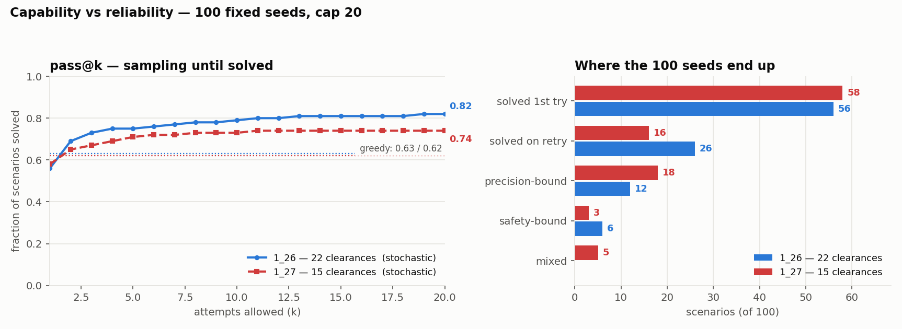
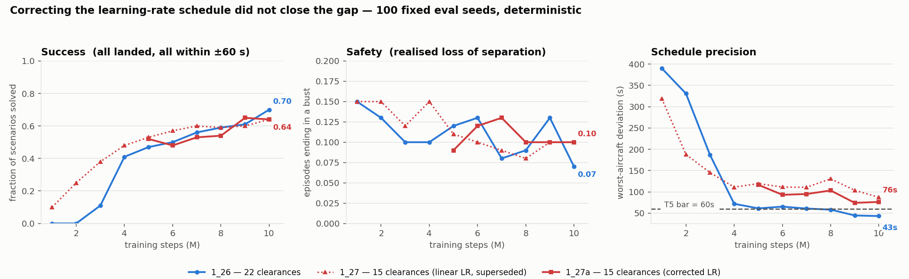

22 clearances vs 15¶
TL;DR
Run 1_27 changes exactly one thing on top of 1_26: the clearance set, from 22 actions
to 15. The set was specified by the domain experts, every cut is backed by measured usage,
and it adds one genuinely new capability — SHORTEN_TROMBONE, the ability to undo a
delay the agent had previously added.
It did not beat the full set. At 10M steps on the same 100 seeds: success 0.70 → 0.64 (a statistical tie) and worst-aircraft deviation 43 s → 87 s (not a tie). The reduced set is markedly more sample-efficient — at 2M steps it is at 0.25 success where the full set is at 0.00 — and then it plateaus where the full set keeps sharpening.
The confound has since been removed by experiment. Run 1_27 crashed at 4.98M and resumed
onto a different learning-rate schedule, which would have left the same fingerprint — so
1_27a re-ran the second half from the same checkpoint on the correct cosine. It landed at
the same 0.64 success and closed only 11 s of the 44 s deviation gap, none of which
survives restricting to clean episodes. The result stands, and now stands cleanly.
Source: actions/actions_v1.py, actions/actions_v2.py, actions/action_set.py,
experiments/*/progress_scored.csv, analysis/2026-08-17_1_27_*.
Why the set was reduced at all¶
Not for its own sake. It came out of a specific measurement — see test log, 11 Aug.
Of run 1_26's 18 unsolvable seeds, 12 were precision-bound: they never lose separation,
they land everything, and they top out at tier 4 because one aircraft misses the ±60 s bar. All
twelve end late, and on all twelve the agent lengthens the trombone in 12 of 12 episodes at
roughly 5× the pool-average rate.
That is a trap, and it was structural. Under v1 the trombone was a one-way door: four
LENGTHEN_TROMBONE_n clearances existed and no shortening clearance existed at all. Speed
authority could not compensate — six consecutive SPEED_UP_LARGE move landing time by only
−18 s, against +339 s for six SLOW_DOWN_LARGE, because arrivals already sit near their
speed ceiling. So an agent that over-delayed early had no action available to recover.
The second observation was that most of v1 was never used. From the 100-seed clearance log (11 Aug), everything v2 drops accounts for 7.16% of all clearances issued.
The two sets, side by side¶
0 DO_NOTHING 12 TURN_RIGHT_SKIP_1_AND_RETURN_TO_ROUTE_10
1 SPEED_UP_SMALL 13 LENGTHEN_TROMBONE_1
2 SPEED_UP_LARGE 14 LENGTHEN_TROMBONE_2
3 SLOW_DOWN_SMALL 15 LENGTHEN_TROMBONE_3
4 SLOW_DOWN_LARGE 16 LENGTHEN_TROMBONE_4
5 TURN_LEFT_AND_RETURN_TO_ROUTE_5 17 SKIP_1_WAYPOINT
6 TURN_RIGHT_AND_RETURN_TO_ROUTE_5 18 SKIP_2_WAYPOINTS_NOT_NEXT
7 TURN_LEFT_AND_RETURN_TO_ROUTE_10 19 SKIP_3_WAYPOINTS_NOT_NEXT
8 TURN_RIGHT_AND_RETURN_TO_ROUTE_10 20 SKIP_4_WAYPOINTS_NOT_NEXT
9 TURN_LEFT_SKIP_1_AND_RETURN_TO_ROUTE_5 21 VECTOR_TO_ILS
10 TURN_RIGHT_SKIP_1_AND_RETURN_TO_ROUTE_5
11 TURN_LEFT_SKIP_1_AND_RETURN_TO_ROUTE_10
Eight of these twenty-two are turn variants, and four more are trombone levels that only go one way.
Frozen in actions/actions_v1.py and never edited again, so run 1_26 stays replayable.
0 DO_NOTHING 5 SPEED_UP_MEDIUM 10 SKIP_1_WAYPOINT
1 SLOW_DOWN_SMALL 6 TURN_LEFT_..._ROUTE 11 SKIP_2_WAYPOINTS_NOT_NEXT
2 SLOW_DOWN_MEDIUM 7 TURN_RIGHT_.._ROUTE 12 SKIP_3_WAYPOINTS_NOT_NEXT
3 SLOW_DOWN_LARGE 8 LENGTHEN_TROMBONE 13 SKIP_4_WAYPOINTS_NOT_NEXT
4 SPEED_UP_SMALL 9 SHORTEN_TROMBONE 14 VECTOR_TO_ILS
Ids are contiguous 0–14 and do not correspond to v1's ids. Marker 8 means a right turn
under v1 and LENGTHEN_TROMBONE under v2 — which is why the render's action legend is now
generated from the active enum rather than a fixed table.
What changed, and the evidence for each change¶
| change | v1 | v2 | evidence |
|---|---|---|---|
| Turn variants collapsed | 8 | 2 | Only the plain 10 NM rejoin saw real use (1.54% left / 1.17% right on run 1_25). The 5 NM and skip-1 variants were 0.02–0.6% each |
| Trombone made reversible | 4 absolute levels, one-way | 1 reversible pair, stacking | The 12 precision-bound seeds, above. This is the substantive addition |
SPEED_UP_LARGE dropped |
present | removed | 6× SPEED_UP_LARGE = −18 s of landing time vs +339 s for 6× SLOW_DOWN_LARGE. It was 1.4% of clearances |
| MEDIUM speed steps added | ±10 / ±30 kt | ±10 / ±20 / ±30 kt | Fills the gap between a step too small to matter and one that overshoots |
| Set made asymmetric | 2 up, 2 down | 2 up, 3 down | Deliberate: arrivals sit near their speed ceiling, so slowing has far more authority than speeding up |
LENGTHEN/SHORTEN are exact inverses, and they stack
Three lengthens with no shorten between them give +3; capacity is 4 levels. Shortening
cannot go below the baseline route — every aircraft starts with its trombone fully cut out,
so shorten only ever undoes the agent's own prior lengthening. The unwind is stack-based
because insertions nest (A, f1..fn, bn..b1, B), and only levels not yet flown past are
removable. Verified directly: 3 lengthens + 3 shortens restore the exact original route on
4/4 aircraft, and 30 randomly interleaved operations leave route length and store capacity
identical to the start.
How a set is selected¶
ACTION_SET = os.getenv("TADA_ACTION_SET", "v2") # config/config.py:217
_ACTION_SET_SIZES = {"v1": 22, "v2": 15}
NUM_ACTIONS = _ACTION_SET_SIZES[ACTION_SET]
An environment variable, not a CLI flag, because actions/action_set.py reads it at import
time — it sizes the action space, the clearance head, the mask and the action-history one-hot, so
a flag parsed inside main() would arrive far too late.
check_checkpoint_compatible() reads the clearance-head width straight out of a checkpoint zip
and exits with the remedy rather than a raw tensor-shape error:
Checkpoint/action-set mismatch.
experiments/atc_run_1_26_sep3nm/checkpoints/ppo_tada_9950000_steps.zip
was trained with 22 clearances, but ACTION_SET='v2' has 15.
Re-run with:
TADA_ACTION_SET=v1 python <your command>
What the training run showed¶
Run 1_27 launched 11 Aug at commit 4a170c6, 10M steps, MXP trombone, on top of run 1_26's
MDP with only the clearance set changed. It completed 12 Aug.
The confound, stated first¶
1_27 is not a clean single-variable experiment, and the reason matters.
It died at 4 975 000 steps and was resumed the next morning. main.py::_resume_lr_schedule
does not continue the original cosine — it builds a linear decay from the learning rate the
checkpoint was at (1.846e-4) down to the same floor (3e-5) over the remaining steps. Both runs
start at 3e-4 and end at 3e-5; 1_27 spends its whole second half above 1_26.

The confound pointed the same way as the effect
A higher late learning rate is exactly what prevents the fine convergence that
worst-aircraft deviation needs — and worst-aircraft deviation is precisely where 1_27
underperforms. So it could not be ruled out by argument.
This project has been caught by this before: 1_21 and 1_22 are byte-identical code, and
a fresh warm-up-plus-cosine versus a resume onto a flat rate was the entire difference
between them.
It was therefore tested rather than argued about — see the corrected run below.
Two smaller differences rode along, both believed harmless: eval and checkpoint cadence moved
from 5k/10k to 25k steps — which makes 1_27's best_model a less extreme argmax than
1_26's, so if anything it flatters 1_27 on that one metric — and the bit-identical
observation-build speed-up.
Head to head¶

| at 10M steps | success | 95% CI | separation | clean-subset | tier | worst-ac dev |
|---|---|---|---|---|---|---|
1_26 — 22 clearances |
0.70 | 0.60–0.78 | 0.07 | 0.753 | 4.38 | 43.4 s |
1_27 — 15 clearances |
0.64 | 0.54–0.73 | 0.10 | 0.711 | 4.01 | 87.3 s |
Scored twice, and the spread is the error bar
An independent same-day re-score of the same two checkpoints on the same pool returned
0.69 / 41.3 s and 0.60 / 92.3 s
(analysis/2026-08-17_1_2{6,7}_at10M_perseed.csv). The observation frame comes from a global
RNG reset() never reseeds, so repeat scoring of one checkpoint moves by a few seeds — here,
1 seed for 1_26 and 4 for 1_27. Both draws support the same two conclusions.
Success is a tie. The gap is 0.06 on the tracked series and 0.09 on the re-score, against a 95% threshold of ≈0.13 at this sample size (see Wilson intervals). Claiming that 22 clearances beat 15 on success is reading noise.
Worst-aircraft deviation is not a tie, and the curve shape is the real evidence:
| steps | 1_26 max dev | 1_27 max dev | 1_26 success | 1_27 success | |
|---|---|---|---|---|---|
| 1M | 390.0 s | 318.8 s | 0.00 | 0.10 | |
| 2M | 330.8 s | 188.0 s | 0.00 | 0.25 | |
| 3M | 186.5 s | 145.3 s | 0.11 | 0.38 | |
| 4M | 72.2 s | 111.3 s | 0.41 | 0.48 | |
| 5M | 61.4 s | 119.5 s | 0.47 | 0.53 | |
| 6M | 65.5 s | 111.5 s | 0.50 | 0.57 | |
| 7M | 61.0 s | 110.9 s | 0.56 | 0.60 | |
| 8M | 58.5 s | 130.7 s | 0.59 | 0.59 | |
| 9M | 44.8 s | 103.8 s | 0.61 | 0.60 | |
| 10M | 43.4 s | 87.3 s | 0.70 | 0.64 |
Two clean readings come out of this table:
- The reduced set is much more sample-efficient.
1_27leads on success at every checkpoint through 7M. At 2M it is at 0.25 where1_26is at exactly 0.00. A smaller action space is easier to explore, and it shows immediately. - It then stops improving where
1_26doesn't. From 4M on,1_26's worst-aircraft deviation walks down 72 → 43 s and crosses the ±60 s bar that T5 requires.1_27never gets below 87 s — still 1.45× the bar. They cross over on success at 8M.
The two policies disagree in both directions¶
Averages hide this. Seed by seed at 10M, deterministic:
| scenarios | |
|---|---|
| both solve | 49 |
only 1_26 (22 clearances) solves |
20 |
only 1_27 (15 clearances) solves |
11 |
| neither solves | 20 |
So v2 is not a strictly worse policy — it wins 11 scenarios v1 cannot solve greedily. It is a differently-shaped one that loses more trades than it wins. Mean worst-aircraft deviation restricted to clean episodes is 44.4 s (v1, n=92) against 89.8 s (v2, n=93), so the precision gap is not an artefact of busts either.
Did SHORTEN_TROMBONE earn its place?¶
This is the question the whole change was built around — and it has a clean answer.
No. The agent issues it 5 times in 5 162 clearances.

| manoeuvre family | 1_26 (v1) |
1_27 (v2) |
|---|---|---|
| slow down | 3 077 · 58.7% | 2 971 · 57.6% |
| speed up | 994 · 19.0% | 1 145 · 22.2% |
| lengthen trombone | 628 · 12.0% | 713 · 13.8% |
| shorten trombone | — (does not exist) | 5 · 0.10% |
| skip waypoints | 458 · 8.7% | 316 · 6.1% |
| turn off / rejoin | 88 · 1.7% | 12 · 0.2% |
| total issued | 5 245 | 5 162 |
The agent lengthens 143× more often than it shortens. So the mechanism intended to rescue the precision-bound scenarios never engaged — and, correspondingly, they were not rescued:

| attempts-to-solution, 100 seeds, cap 20 | 1_26 |
1_27 |
|---|---|---|
| deterministic | 0.63 | 0.62 |
| pass@1 | 0.56 | 0.58 |
| pass@20 | 0.82 | 0.74 |
| never solved in 20 | 18 | 26 |
| — precision-bound | 12 | 18 |
| — safety-bound | 6 | 3 |
| — mixed | 0 | 5 |
Zero of twelve
1_27 solves none of 1_26's 12 precision-bound seeds within 20 attempts. All twelve
remain censored and six more join them. The reduced set was designed for exactly these
scenarios.
What did move: safety-bound failures halved, 6 → 3 — 1_27 solves three seeds
(41, 1242911821, 1632629719) that 1_27's predecessor could not fly safely at all. And
pass@1 is marginally better while pass@20 is clearly worse, which is the signature of a
tighter action distribution: a better first guess, less left for sampling to find.
Full detail and the raw tables: test log, 17 Aug.
The corrected run — removing the confound¶
Rather than argue about the learning rate, we re-ran it. atc_run_1_27_actionset_v2_a resumes
from 1_27's exact 4 975 000-step checkpoint and runs the remaining 5.025M steps on
1_26's cosine instead of the linear decay
(main.py --resume-schedule cosine, added for this). The cosine evaluated at that resume point
returns 1.8452e-4 against the checkpoint's actual 1.8464e-4 — 0.06% apart — so it is a
seamless continuation rather than a third schedule.

| at 10M steps | success | separation | clean-subset | tier | worst-ac dev |
|---|---|---|---|---|---|
1_26 — 22 clearances, cosine |
0.70 | 0.07 | 0.753 | 4.38 | 43.4 s |
1_27 — 15 clearances, linear |
0.64 | 0.10 | 0.711 | 4.01 | 87.3 s |
1_27a — 15 clearances, cosine |
0.64 | 0.10 | 0.711 | 4.04 | 76.5 s |
The schedule was not the explanation.
- Success did not move at all — 0.64 either way, still 0.06 below
1_26and inside the ≈0.13 significance threshold. - Deviation closed 10.8 s of a 43.9 s gap — about a quarter — leaving 33 s unexplained.
- And that quarter does not survive scrutiny. Restricted to clean episodes, mean worst-aircraft deviation is 89.8 s for the linear run and 92.8 s for the corrected one. The apparent gain came from the bust episodes, not from flying more precisely.
Everything else reproduces almost exactly across the two schedules, which is the strongest evidence that the action set — not the optimiser — is what is being measured:
1_26 |
1_27 linear |
1_27a cosine |
|
|---|---|---|---|
| attempts: deterministic | 0.63 | 0.62 | 0.62 |
| pass@1 | 0.56 | 0.58 | 0.61 |
| pass@20 | 0.82 | 0.74 | 0.74 |
| censored / precision-bound | 18 / 12 | 26 / 18 | 26 / 18 |
of 1_26's 12 precision-bound, solved |
— | 0 | 0 |
| solved of 100, cap 25 | 83 | 76 | 76 |
SHORTEN_TROMBONE issued |
n/a | 5 / 5 162 | 6 / 5 425 |
One band nearly told the wrong story
At 9M the corrected run scored 0.65, briefly ahead of 1_26's 0.61, and its deviation
had fallen to 74 s. One band later it settled back to 0.64. A revision published off that
single point would have been a reversal that was not real — which is exactly what the
few-seed noise floor predicts, and why the endpoint is the
number.
The verdict, and what it does and does not license¶
Three statements, all now confound-free
SHORTEN_TROMBONEis not being used, and the precision-bound scenarios are not fixed. 5 clearances in 5 162 on the linear run and 6 in 5 425 on the corrected one — about one in a thousand either way — and 0 of 12 seeds in both. Two runs, two schedules, same answer.- The reduced set is markedly more sample-efficient. 0.25 success at 2M steps against 0.00, leading at every checkpoint through 7M. The runs are identical up to 4.98M, so this never depended on the schedule.
- The reduced set converges to worse schedule precision. 76 s against 43 s after the correction. The schedule accounted for a quarter of the original gap on paper and none of it among clean episodes.
Where this leaves the action set. The 15-clearance set is genuinely better at finding a decent policy and genuinely worse at finishing one. It also wins scenarios the full set cannot — 9 of 100, greedily — so it is not uniformly worse, just differently shaped.
The design question it actually raises. Statement 1 is the one worth a run: giving the agent a corrective action is not the same as giving it a reason to learn one. Lengthening pays immediately through the conflict term; shortening pays only at landing, through deviation, and costs an action penalty now. That is a reward-shaping and exploration problem, and it is where the next experiment belongs — not in the action space.